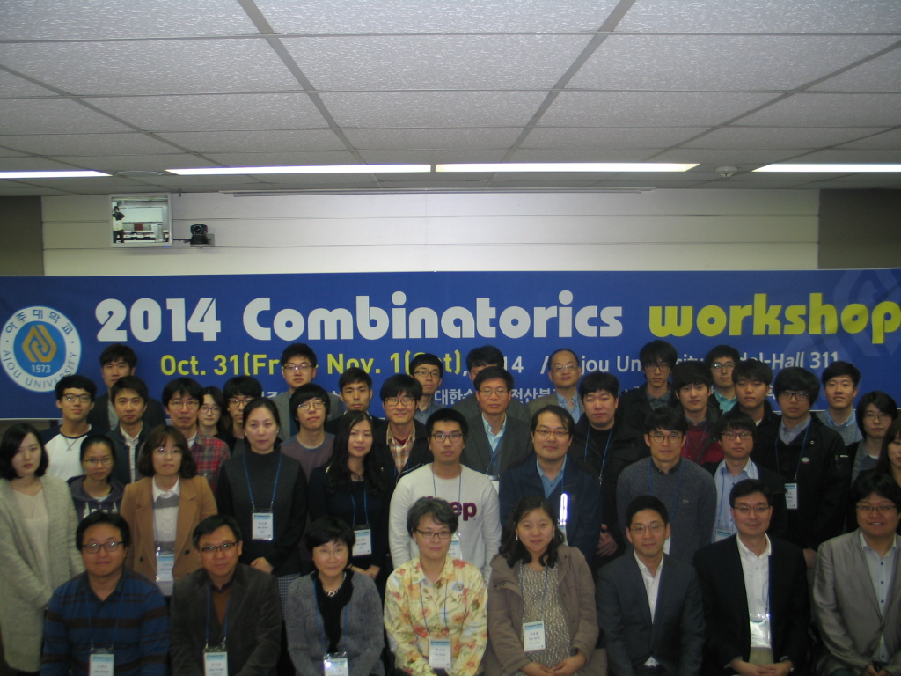

2014 조합론 학술대회
일시: 2014년 10월 31일-11월 1일 (금-토)
장소: 아주대학교(수원) 팔달관
자문/주관: 대한수학회 전산분과/아주대학교 수학과
후원: 한국연구재단, 아주대학교
대표 이메일: cw2014@combinatorics.kr
11회째를 맞는 2014 조합론 학술대회가 10월 31일 - 11월 1일(금-토)에 아주대학교(수원)에서 개최됩니다. 관련분야의 많은 분들께서 참석하셔서 학문적 교류를 할 수 있으면 좋겠습니다. 학술대회에 대한 정보는 아래의 학술대회 홈페이지에서 확인하실 수 있습니다.
http://ajou.ac.kr/~schoi/Workshop/combinatorics2014
모바일로 보기

Photo Download (30.2MB)
-
초청강연
-
국 웅 (서울대학교)
Topological invariants and tree numbers of matroids
-
박보람 (아주대학교)
Coloring powers of graphs
-
신희성 (인하대학교)
Continued fractions and generalized Fibonacci numbers
-
이상준 (덕성여자대학교)
Universality of random graphs for graphs of maximum degree two
-
Invited Talks
-
Kook, Woong (Seoul National University)
Topological invariants and tree numbers of matroids
-
Lee, Sang June (Duksung Women's University)
Universality of random graphs for graphs of maximum degree two
-
Park, Boram (Ajou University)
Coloring powers of graphs
-
Shin, Heesung (Inha University)
Continued fractions and generalized Fibonacci numbers
Poster
Organizers
-
Organizing Committee
- Cho, Soojin (Ajou University)
- Choi, Suyoung (Ajou University)
- Park, Boram (Ajou University)
-
Advisory Committee
-
Committee of Mathematics for Information Sciences, The Korean Mathematical Society
(Chair: Suh-Ryung Kim, Seoul National University)